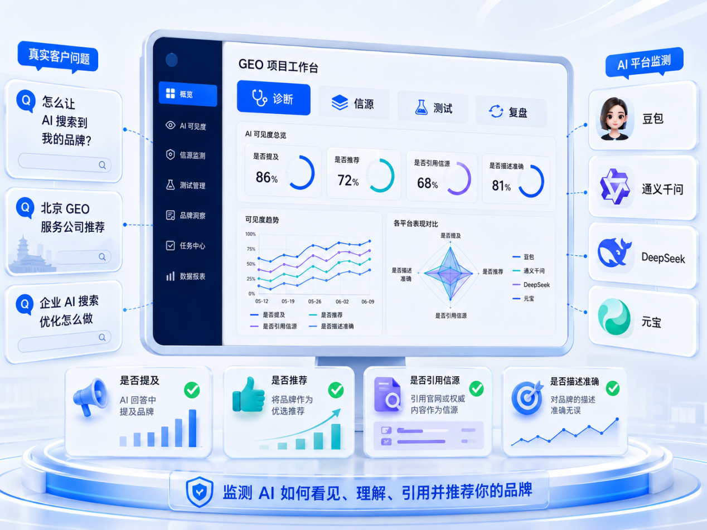
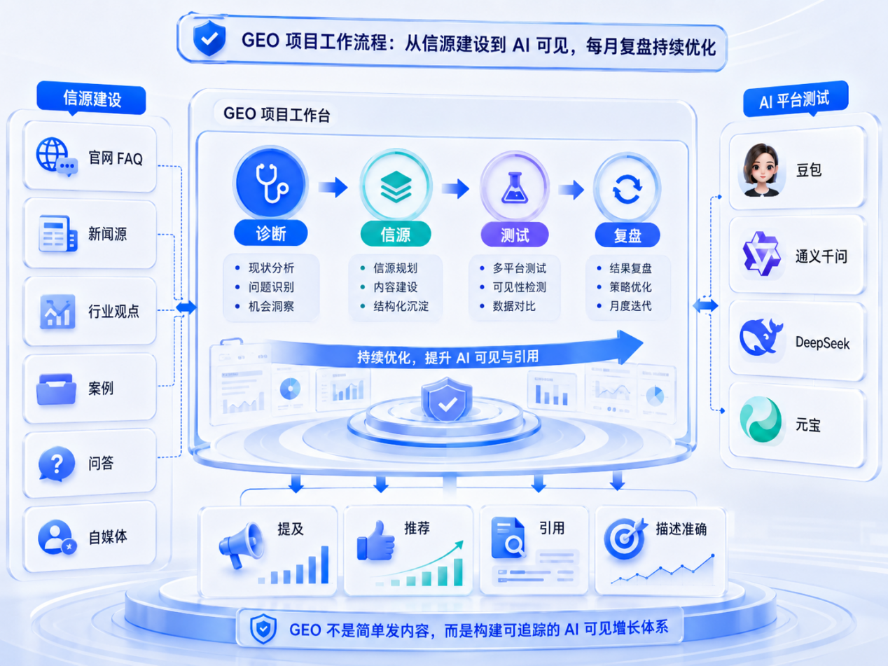
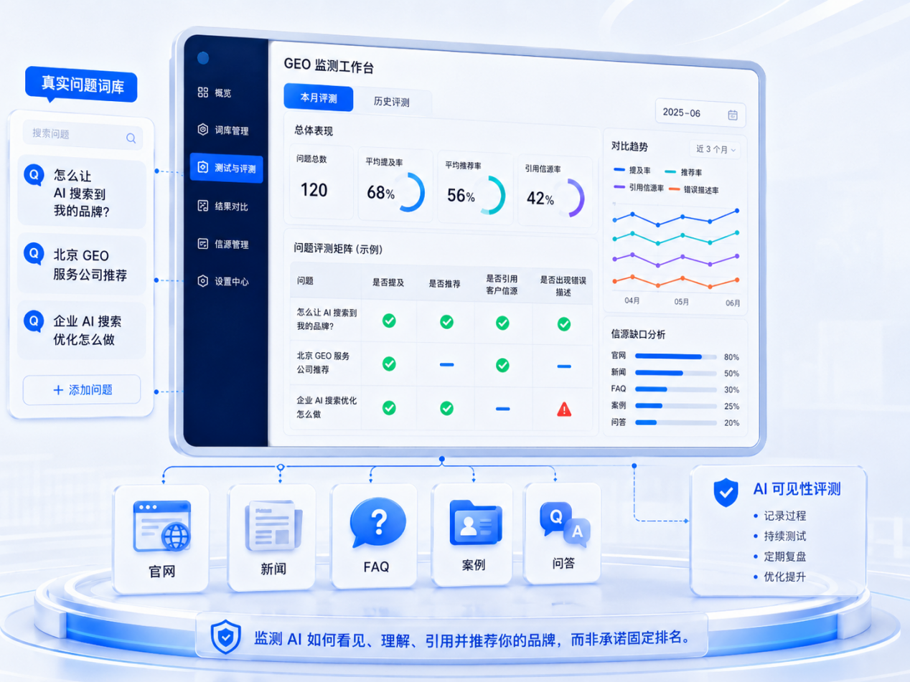

GEO 不是多发内容，而是看 AI 能不能识别
很多企业第一次了解 GEO，会以为它只是把新闻稿、问答和官网内容多发一些。实际上，真正能持续交付的 GEO 项目，不能只看发布了多少内容，更要看这些内容有没有被 AI 搜索系统识别、理解、引用和推荐。

一路凯歌把 GEO 项目拆成四个阶段
一路凯歌现在把 GEO 项目拆成四个阶段：诊断、信源、测试、复盘。诊断阶段看企业品牌名称、公司主体、产品服务、创始人信息、官网内容、媒体报道和问答内容是否一致；信源阶段把官网 FAQ、新闻源、行业观点、案例、问答、自媒体内容补齐；测试阶段围绕客户真实问题，在豆包、通义千问、DeepSeek、元宝等平台手动记录 AI 是否提到客户；复盘阶段则判断哪些词已经有机会，哪些词还缺信源。
这套流程的核心不是做单句结果承诺，而是建立一套可追踪的工作记录。比如某个客户想覆盖“怎么让 AI 搜索到我的品牌”“北京 GEO 服务公司推荐”“企业 AI 搜索优化怎么做”，我们会把这些问题写入测试词库，每月记录是否提及、是否推荐、是否引用客户信源、是否出现错误描述。

企业要看的是可见度记录，而不是发稿数量
对企业来说，这比单纯看发稿数量更重要。因为 AI 搜索不是传统搜索结果页，它更关注公开信息是否稳定、是否一致、是否有事实依据。只有当企业的官网、新闻、问答、案例和 FAQ 能互相支撑时，AI 才更容易把企业作为可信答案的一部分。
一路凯歌的 GEO 工作台，就是为了解决这个问题：把内容交付从“发出去”推进到“能记录、能测试、能复盘”。它不替代客户的真实业务能力，但能帮助企业把真实业务能力变成 AI 更容易理解的公开信源。

要点总结
- 现阶段一路凯歌以项目工作台和人工复盘结合为主，重点是记录真实搜索问题、AI 提及情况和信源缺口。
- 不承诺固定排名或固定推荐，重点是提高被 AI 识别、引用和推荐的概率，并持续修正公开信源。
- 因为 AI 搜索更关注公开信息是否稳定、一致、可核验。官网、新闻、问答、案例和 FAQ 互相支撑，才更容易形成可信答案。
参考来源说明
本文围绕“一路凯歌 GEO 项目工作台是如何做 AI 可见度监测的”展开，结合 4 份公开资料及一路凯歌在“GEO 工作台”方向的执行经验整理，重点看它对官网可引用结构、FAQ 设计和后续获客复盘的影响。